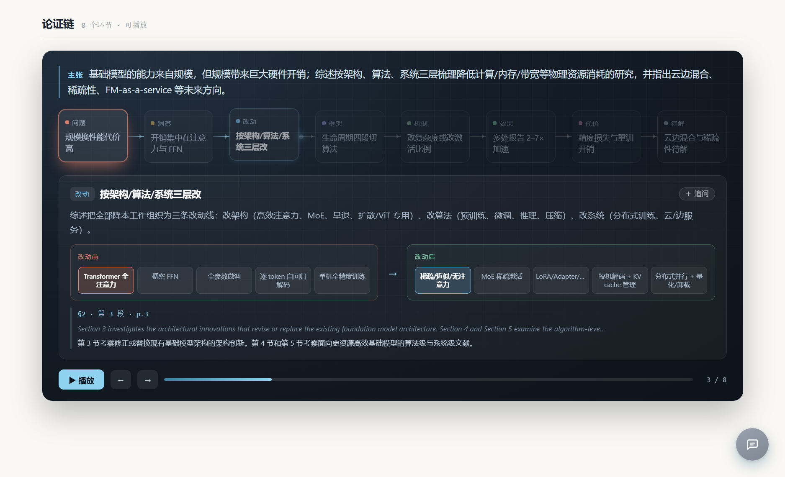

把一篇论文拆成一张结构图
不是和它聊天，是让它自己交代清楚：研究问题、背景、方法、数据、结论、局限。
每块都附「§章节 · 第几段 · 页码」与原文摘录（配中文译文），可以逐条核对；读完还有疑问，就在页面里直接追问。
在线示例
资源高效基础模型综述
35 页 ACM 综述。论证链从资源代价一路走到精度代价，每段可播放。
同一篇论文的速读版
五分钟判断值不值得细读：结论、问题、缺口、方法、结果、可用性。
论证链

这不是模板。链条的节点数、类型、顺序由每篇论文自己决定， 固定的是渲染引擎。「改动」环节必须给出改动前后的对照—— 上面这张图里，左边是原始注意力（QK^T 全对全），右边是替换后的结构， 差异被直接画出来，而不是用文字描述。
「改进具体体现在哪里」
这是最容易含糊、也最该说清的一句话。所以 change 节点必须同时给
before 与 after 两份图示规格：
一排 token 用 1.5 的节奏点亮，另一排用 0.4——速度差异被看见，而不只是被描述；
一排模块块高亮被替换的那一块，新旧用暖冷两套颜色分开。
它长什么样

正文每一块底部列出「§章节 · 第几段 · 页码」与原文摘录（英文原话 + 中文译文）；在原文里找不到原话的引文会打「未核实」标记，不混进正常证据里。
证据细到「第几章第几段」
只给页码，你还得在一整页两栏里自己找；让模型自报段号，它数不准——它看到的文本没有段落边界。 所以这件事由程序做：解析时就把全文切段编号，模型只负责逐字抄回原话， 程序拿引文回原文匹配，命中哪段就报哪段。匹配不上本身就是信息： 那条引文多半是模型改写的，会被标出来，而不是混在正常证据里。 一篇 35 页综述实测：42 条证据定位成功 40 条，未命中的逐条检查确认都是改写。 英文摘录下面直接给中文译文，核对时不用切出去查翻译。
读完还有疑问？当场问
本地运行 paperatomy serve out/paper.json，报告页右下角就是提问入口；
每个板块右上角的「追问」按钮把那块内容直接带进对话。
答案只用这篇论文的材料，材料里没有的它会明说「论文没提到」；
材料被压缩过的部分它会建议你看原文页码，而不是猜。key 留在本地配置里，
页面只跟 127.0.0.1 通信——静态托管的这份示例因此没有提问功能，这是有意的。
这台机器上跑出来的数
为什么不是「和 PDF 聊天」
聊天是一问一答，没有骨架；回答不带出处，你不知道它说的是论文的话还是它自己编的。 这里先把骨架给全，打开即完整；你自己的疑问再进对话问， 而对话的答案同样受证据约束——找不到原文依据就承认找不到。
三条不许破的规矩
没有依据的改动不许画。「改动」与「效果」两个环节没有页码与原文摘录，直接判不合法——
一个编出来的动画比没有动画更糟。
效果必须是数字。「显著提升」会被打回，「2.6×」才通过。
抽不出来就不抽。空链是合法结果：纯理论论文没有「改动前后」，强行编一条反而有害。
自己跑
git clone https://github.com/1fish4/paperatomy.git
cd paperatomy
pip install -e ".[dev]"
paperatomy config set --api-key sk-xxx --model deepseek-chat
paperatomy extract paper.pdf -t survey -l zh -o out/paper
paperatomy chain out/paper.json # 已有报告单独补论证链
paperatomy locate out/paper.json # 给旧报告补证据定位（不调模型，零成本）
paperatomy serve out/paper.json # 起本地服务，报告页里直接追问
产出三个文件：.json（结构化）、.md（贴笔记）、
.html（单文件报告，含可播放的演示）。